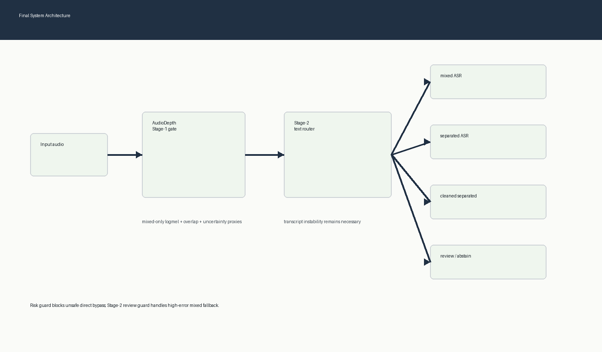
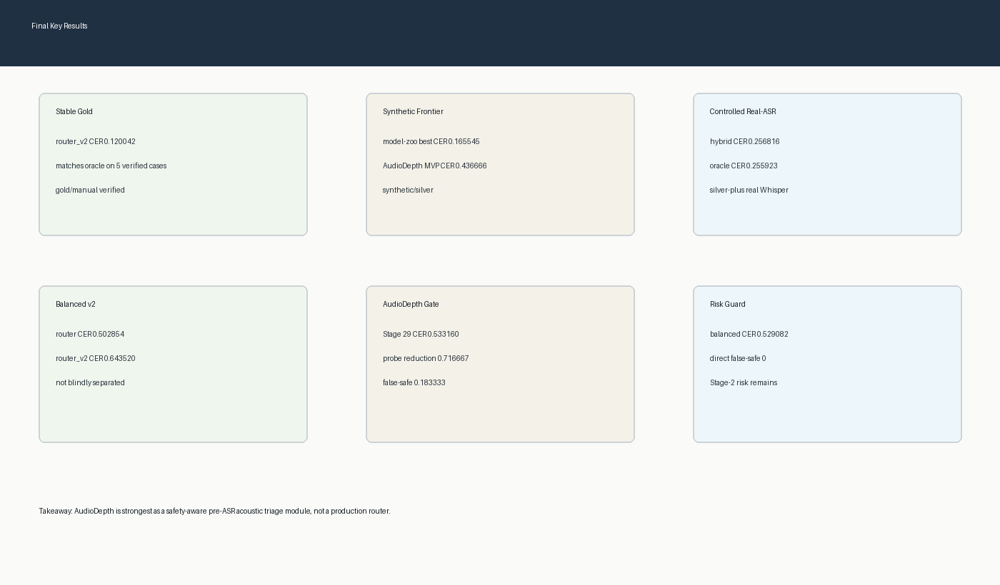
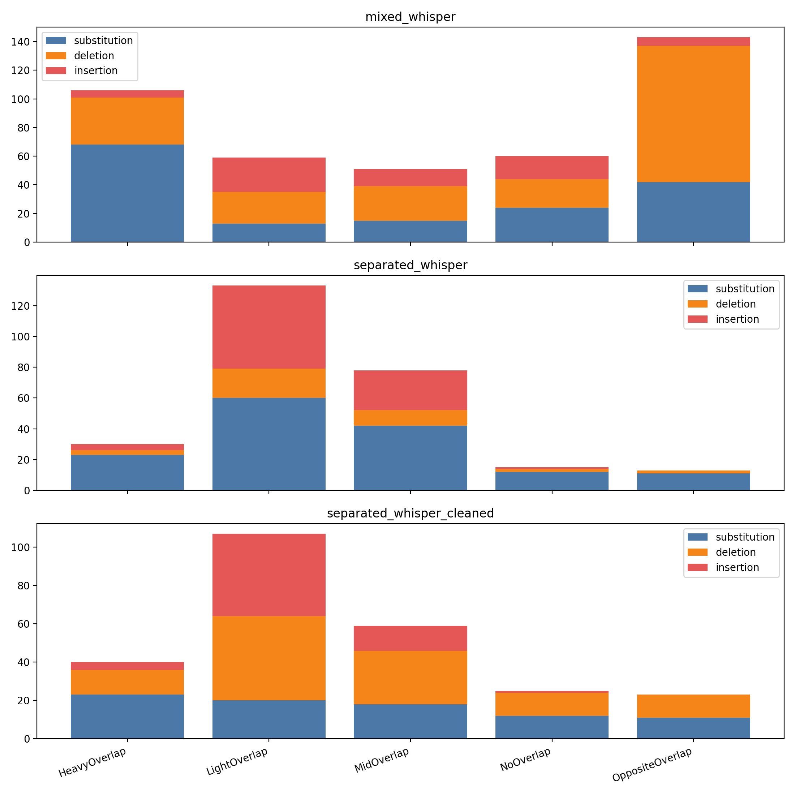
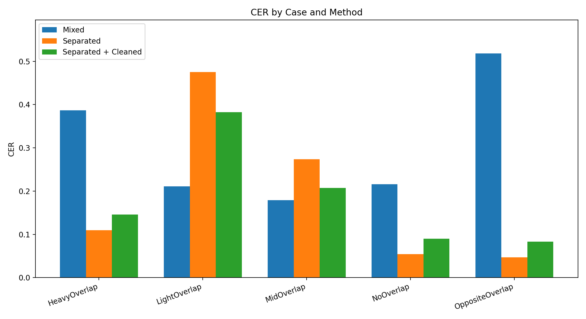
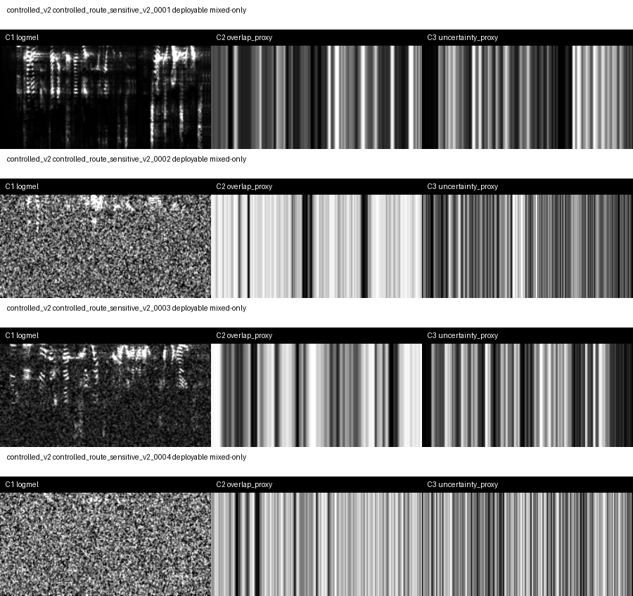
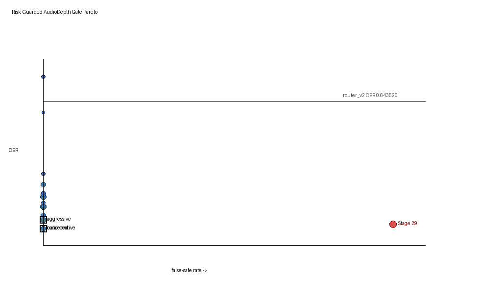
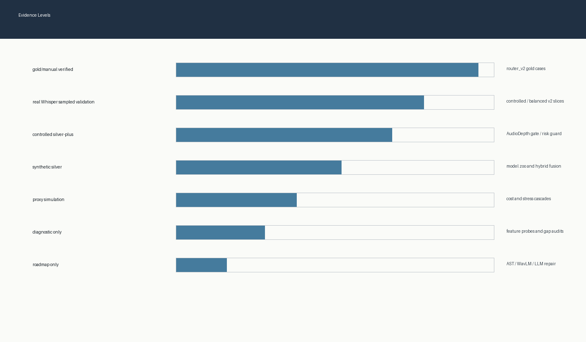

A complete overlap-aware ASR project, not one trick.
The project starts with a simple question: when should a multi-speaker ASR system keep mixed audio, separate speakers, clean transcripts, route adaptively, or abstain for review?

Everybody's work fits into one pipeline.
This slide is the answer to "what did the whole project build?" It keeps the team contributions visible before the demo zooms into the route challenge.
Data + Whisper baseline
Team baseline track
Prepared mixed/separated audio, transcript candidates, and reproducible Whisper-style baselines.
resources/, results/transcripts/, src/whisper_transcribe.py
Separation + postprocess
Pipeline track
Compared mixed, separated, and duplicate-suppressed cleaned transcript routes.
src/separate_speakers.py, src/postprocess.py
Adaptive routing
Router track
Built router_v1/v2 and risk-aware selection from deployment-visible instability signals.
src/adaptive_router_v2.py, src/risk_aware_selector.py
Evaluation stack
Metric track
Implemented CER, speaker-aware CER, cpCER-lite, error-type analysis, and evidence ledgers.
REPORT.md, docs/final_claim_ledger.md
Synthetic robustness
Validation track
Created synthetic silver and held-out split checks to expose overfitting and oracle gaps.
src/synthetic_*.py, results/tables/
Frontier systems
Research-expansion track
Explored MeetEval/cpWER, speaker-profile diagnostics, LLM critic/RAG, demo excellence, and AudioDepth.
docs/frontier/, results/figures/
The system flow in six readable steps.
Use this slide when the architecture figure is too small on a projector. It is the same story, rewritten as large text.
Route challenge: listen first, then guess.
Play one clip, then ask: keep mixed, separate, clean, or review? This makes the core routing problem memorable before the results table appears.
The five-case gold story
The stable claim is deliberately narrow: on five verified gold cases, route selection beats fixed routes and matches the oracle average. This is the strongest quantitative claim in the project.
| strategy | average_CER | meaning |
|---|---|---|
| fixed_mixed_whisper | 0.302093 | simple baseline |
| fixed_separated_whisper | 0.191846 | stronger but not always safe |
| fixed_separated_whisper_cleaned | 0.181681 | postprocess helps sometimes |
| router_v2 | 0.120042 | team stable baseline |
| oracle_best | 0.120042 | upper bound on this tiny gold set |

We also measured the right failure modes.
Normal CER is not enough for multi-speaker audio. The project adds error-type analysis, speaker-aware CER, and cpCER-lite so routing decisions are judged by content and attribution behavior.


Separation is a tool, not a law.
Light and mid overlap can suffer from insertion and repetition artifacts after separation. Heavy and opposite overlap benefit more clearly. The router contribution is making that boundary explicit.
| case | best_route | lesson |
|---|---|---|
| NoOverlap | separated_whisper | clean audio can still benefit from speaker-track structure |
| LightOverlap | mixed_whisper | separation can introduce insertion/repetition artifacts |
| MidOverlap | mixed_whisper | moderate overlap is not automatically a separation win |
| HeavyOverlap | separated_whisper | strong overlap benefits from separated streams |
| OppositeOverlap | separated_whisper | competitive overlap benefits from separated streams |
The repository became a team research workbench.
Beyond the stable router, the strongest team value is the organized spread of evaluation and research tracks. Some are real results, some are honest scaffolds, and each has claim boundaries in the docs.
Compute-aware cascade
Deployment track
Recorded cost/RTF tradeoffs and profile cards for accuracy-first, balanced, and cost-first use.
results/figures/cascade_*.md
MeetEval / cpWER
Evaluation frontier
Built compatibility exports, dry-run handoffs, and cpWER alignment scorecards.
results/figures/meeteval_*.md
Speaker profile
Attribution frontier
Found a swapped-bias failure mode and staged stronger profile/embedding baselines.
results/figures/speaker_profile_*.md
LLM critic / RAG
Agentic frontier
Prepared qualitative critic queues and repair directions without claiming verified repair.
results/figures/llm_critic_*.md
External validation
Generalization frontier
Kept external validation visible as a blocker instead of pretending local slices prove deployment.
results/figures/frontier_*.md
AudioDepth attempt
Acoustic triage frontier
Tests RGB-D-style acoustic maps as a pre-ASR signal. Useful and visual, but not the team's central proof.
docs/frontier/audiodepth_one_page.md
Demo excellence
Presentation frontier
Turned results into walkthroughs, runbooks, and now a static 10-minute offline deck.
demo/index.html
AudioDepth: RGB-D intuition for sound
This is one exploratory branch: treat overlap like time-frequency occlusion, where logmel is the image and overlap/uncertainty are depth-like channels.

The router needs a seatbelt.
This branch is most useful when framed modestly: the risk-guarded AudioDepth gate explores whether an acoustic prefilter can reduce text probing while constraining unsafe mixed bypasses.

Source-disjoint audit: then we made the split stricter.
Stage 34 uses a source-disjoint test so that source utterances do not leak across train, validation, and test.
| split | manifest_rows | route_cer_rows | unique_source_tokens |
|---|---|---|---|
| train | 26 | 20 | 12 |
| validation | 10 | 9 | 7 |
| test | 11 | 7 | 7 |
| excluded | 73 | 24 | 26 |
| leakage | 0 | 0 | 0 |
On strict test, fixed mixed is risky.
Use this slide as a scoreboard. The point is not huge-data victory; it is evidence discipline. Review rows use the explicit oracle_for_abstained_rows handoff assumption.
| policy | mean_selected_cer | false_safe_count | high_error_mixed_count | review_rate | coverage |
|---|---|---|---|---|---|
| fixed_mixed | 0.875111 | 3 | 6 | 0.0 | 1.0 |
| fixed_separated | 0.672207 | 0 | 0 | 0.0 | 1.0 |
| fixed_cleaned | 0.672207 | 0 | 0 | 0.0 | 1.0 |
| router_v2_refit | 0.572829 | 0 | 3 | 0.0 | 1.0 |
| balanced_router_refit | 0.572829 | 0 | 3 | 0.0 | 1.0 |
| stage29_calibrated_audiodepth_gate_refit | 0.572829 | 0 | 3 | 0.0 | 1.0 |
| stage30_risk_guarded_gate_refit | 0.572829 | 0 | 1 | 0.285714 | 0.714286 |
| stage31_stage2_review_guard_refit | 0.572829 | 0 | 1 | 0.571429 | 0.428571 |
This demo is offline by design.
Your current system Python lacks the full ASR/scientific stack. So the demo reads committed evidence and local media, then presents the whole project without pretending to rerun Whisper live.
| level | component | mean_runtime_sec | provenance |
|---|---|---|---|
| head_only_router | metadata_policy_eval | 0.0001 | measured_python_wallclock_lightweight |
| feature_ready_router | wav_header_scan | 0.000105 | deterministic_stage34_bytes_4036098 |
| end_to_end_asr_reuse | mixed_asr | 0.993471 | existing_faster_whisper_base_runtime |
| end_to_end_asr_reuse | separated_asr | 1.098543 | existing_faster_whisper_base_runtime |
| end_to_end_asr_reuse | cleaned_asr | 1.098543 | existing_faster_whisper_base_runtime |
| end_to_end_asr_reuse | all_routes_per_sample | 2.0924 | existing_controlled_v2_runtime |
The honest ending is the strongest ending.
Stable baseline: router_v2 on five gold cases. Whole-project contribution: a pipeline that combines data preparation, separation, postprocessing, adaptive routing, speaker-aware metrics, robustness checks, risk controls, and frontier scaffolds. AudioDepth is one attempt inside that larger story. Next proof: annotate the micro-gold pack and rerun gold/silver-separated evaluation.
